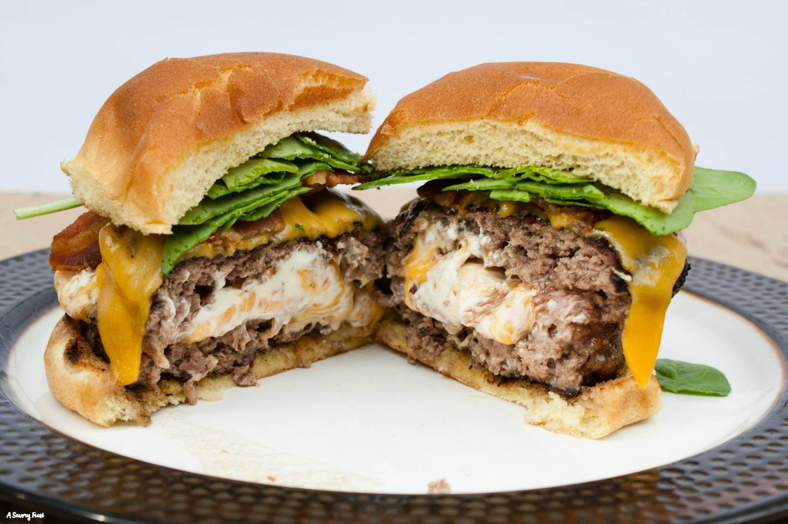

Stuffed Burgers Recipe

Receta de Stuffed Burgers
Ingredientes
- 500 g de carne molida de res
- 100 g de queso cheddar en cubos
- 4 rebanadas de tocino cocido y picado
- 1 cebolla picada
- 2 dientes de ajo picados
- 1 cucharada de salsa Worcestershire
- Sal y pimienta al gusto
- 4 panes de hamburguesa
- Lechuga, tomate, y otros aderezos al gusto
Instrucciones
- En un tazón grande, mezcla la carne molida con la cebolla, el ajo, la salsa Worcestershire, sal y pimienta.
- Divide la mezcla de carne en 8 partes iguales y aplánalas en discos.
- En la mitad de los discos, coloca unos cubos de queso cheddar y un poco de tocino picado.
- Cubre con los discos restantes, sellando bien los bordes para encerrar el relleno dentro de la carne.
- Cocina las hamburguesas en una parrilla o sartén caliente a fuego medio-alto, de 5 a 7 minutos por lado, o hasta que estén bien cocidas.
- Tuesta ligeramente los panes de hamburguesa.
- Arma las hamburguesas con lechuga, tomate, y los aderezos de tu elección.
- Sirve las Stuffed Burgers calientes y disfruta.
¡Disfruta tus Stuffed Burgers caseras!